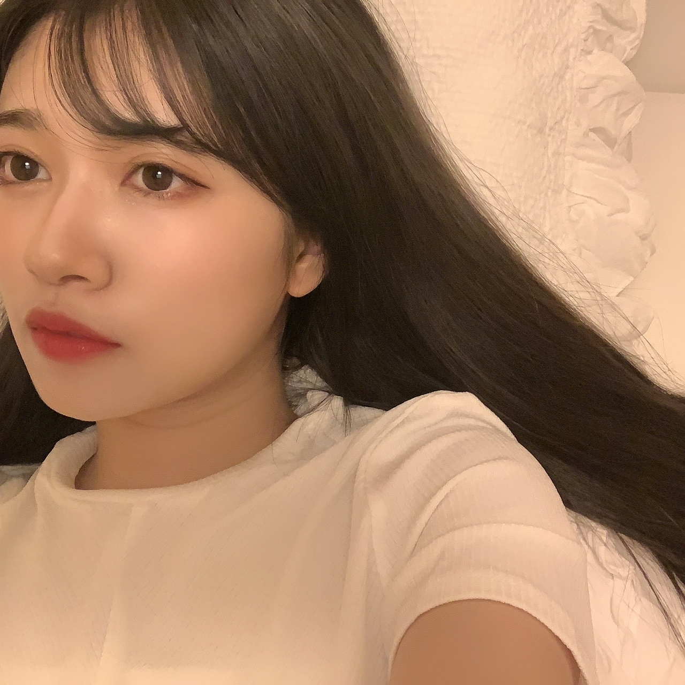
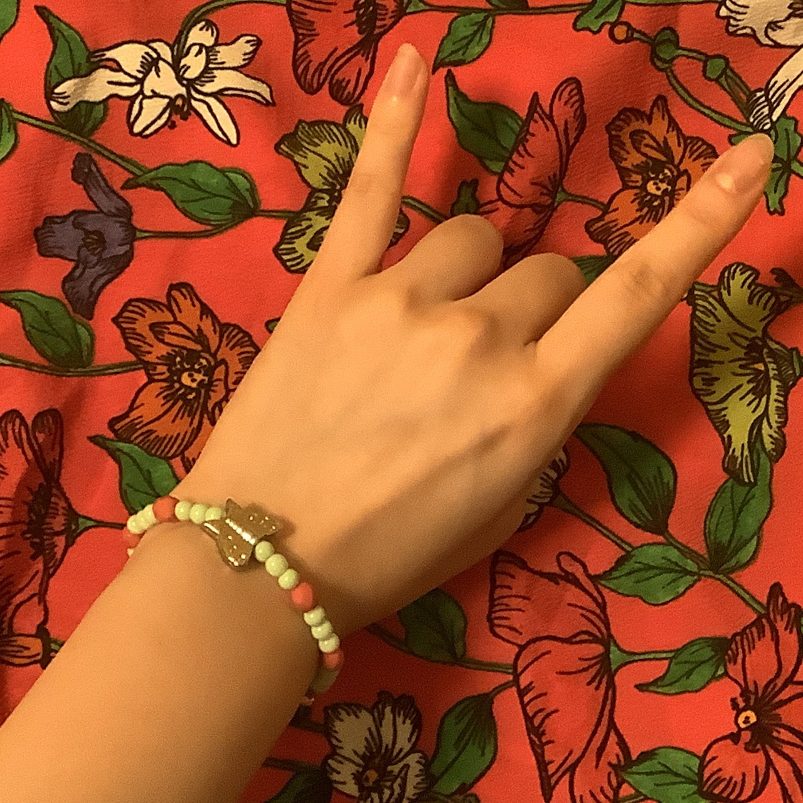

2020/0614Sunlove
おはようございます
こんにちは
こんばんは
いつも、ありがとうございます。
寺田蘭世です。☺️
最近は、アクセサリー作りました！
今はビーズ沢山欲しいです！
これにミサンガを作って
シンプルなTシャツにジャラジャラーっとアクセントで沢山付けたいですねこの夏は！！
ミサンガ小学生以来
覚えてるかな作り方、、、！
それと再び流行りの来ているシュシュも自分のお洋服からリメイクして作ったりしてます。☺️

髪色変えたとモバメでは報告していました。
46時間TVまで秘密にしようと思っていたのですが、、、
メンバーや
写真で見せた友人には
いいねーと評価いただけたのですが。
どうなのでしょうか。
でも、毎月髪色変えても
1年は12ヶ月ですから12色しか試せなくて
そう考えると短く感じますよね。
数字で改めて見つめ直すと
新しい事に挑戦したくなりませんか。
大切に楽しまなきゃ。☺️
色んな自分を皆さんも楽しんで下さいね。☺️
乃木坂工事中宜しくお願い致します。☺️



2020/06/14 18:12
コメント(1027)
蘭世ちゃん46時間テレビお疲れ様！
流石に46時間は無理だったけど、蘭世ちゃんが出ているところだけは絶対見逃すまい！！と見ました。
電視台、蘭世ちゃんが着替えるのかな…？と思いきやまさかの！蘭世ちゃんの着ている服も、すごいオシャレだし、他の人のコーデネートもできる蘭世ちゃんって本当にすごいと思った！私も蘭世ちゃんに全身コーデネートしてもらいたい…。
最後まさかの蛇の登場で、めっちゃみんなびっくりしてるじゃん！(笑)普通に触れる蘭世ちゃんが凄すぎてマヒしてきたけど、あれは私も悲鳴あげそう…(笑)
修学旅行はもう登場からツインテールが可愛すぎて死ぬかと思いました…。
らんらんのときめちゃくちゃ恥ずかしがってましたね(笑)らんらん呼びも可愛くて好き^^
イヤホンガンガンゲーム、蘭世ちゃん才能ありすぎと共に可愛すぎてどうなってるんですか！？周りのメンバーも「蘭世かわいい」って言ってて「わかるわかる…。」となってました(笑)
乃木雀もライブも最高だった！蘭世ちゃんのハウスのダンス、なんかすごい好きなんだよね！どの蘭世ちゃんのダンスも一番好きなんですけどね。アナスターシャは画面の前で一人ですごく泣いてしまいました…。
今回もだけど、2期生ライブも家で一人ですごく泣いてしまって…。会場に行かなくてもこんなに心を動かしてくれる蘭世ちゃんって、本当に自分にとって大きな存在だなぁと改めて思いました。
アベマで蘭世ちゃんが出ているシーン1日何度も見てるよ！何回見ても可愛すぎて、止まりません…！今日も寝るまでにまた見ようっと。
蘭世ちゃんも体に気をつけてすごしてね！本州は最近、とても暑そうなので…！
流石に46時間は無理だったけど、蘭世ちゃんが出ているところだけは絶対見逃すまい！！と見ました。
電視台、蘭世ちゃんが着替えるのかな…？と思いきやまさかの！蘭世ちゃんの着ている服も、すごいオシャレだし、他の人のコーデネートもできる蘭世ちゃんって本当にすごいと思った！私も蘭世ちゃんに全身コーデネートしてもらいたい…。
最後まさかの蛇の登場で、めっちゃみんなびっくりしてるじゃん！(笑)普通に触れる蘭世ちゃんが凄すぎてマヒしてきたけど、あれは私も悲鳴あげそう…(笑)
修学旅行はもう登場からツインテールが可愛すぎて死ぬかと思いました…。
らんらんのときめちゃくちゃ恥ずかしがってましたね(笑)らんらん呼びも可愛くて好き^^
イヤホンガンガンゲーム、蘭世ちゃん才能ありすぎと共に可愛すぎてどうなってるんですか！？周りのメンバーも「蘭世かわいい」って言ってて「わかるわかる…。」となってました(笑)
乃木雀もライブも最高だった！蘭世ちゃんのハウスのダンス、なんかすごい好きなんだよね！どの蘭世ちゃんのダンスも一番好きなんですけどね。アナスターシャは画面の前で一人ですごく泣いてしまいました…。
今回もだけど、2期生ライブも家で一人ですごく泣いてしまって…。会場に行かなくてもこんなに心を動かしてくれる蘭世ちゃんって、本当に自分にとって大きな存在だなぁと改めて思いました。
アベマで蘭世ちゃんが出ているシーン1日何度も見てるよ！何回見ても可愛すぎて、止まりません…！今日も寝るまでにまた見ようっと。
蘭世ちゃんも体に気をつけてすごしてね！本州は最近、とても暑そうなので…！
蘭世こんばんは❗
46時間TV、生の時は少しずつしか観られなかったから後から蘭世のところ探したりしながら繰り返し観ているよー(..)
るなちゃんとの2ショットトークでは人の心を打つことが出来る言葉の素晴らしさを改めて知ったなあ！
電視台は蘭世ならではの演出もあったけど、
とにかく蘭世ファッションが楽しかった！
２期修学旅行の夜では神宮での２期生パートの振り返りがあったけど、本当に２期生を応援してきて良かったなあと思えたし、別のコーナーできいちゃんがリクエストしたときかな？嫉妬の権利の映像も出て来てもう涙もんだった(;;)
プリンシパルのときの観てもこの時から諦めず走り続けてきたからこそ今の蘭世が在るんだなって尊さを覚えた！
そして皆が待ちに待ったスペシャルライブ
直接応援出来なかったけれどとても楽しかった！
乃木雀も後でチェックするー！
久々に乃木坂ちゃんの元気な姿を堪能出来て楽しかったよ！
まだまだ世界的に困難な状況が続くけど、皆でこの事態を乗り越えて行けるといいね☺️
46時間TV、生の時は少しずつしか観られなかったから後から蘭世のところ探したりしながら繰り返し観ているよー(..)
るなちゃんとの2ショットトークでは人の心を打つことが出来る言葉の素晴らしさを改めて知ったなあ！
電視台は蘭世ならではの演出もあったけど、
とにかく蘭世ファッションが楽しかった！
２期修学旅行の夜では神宮での２期生パートの振り返りがあったけど、本当に２期生を応援してきて良かったなあと思えたし、別のコーナーできいちゃんがリクエストしたときかな？嫉妬の権利の映像も出て来てもう涙もんだった(;;)
プリンシパルのときの観てもこの時から諦めず走り続けてきたからこそ今の蘭世が在るんだなって尊さを覚えた！
そして皆が待ちに待ったスペシャルライブ
直接応援出来なかったけれどとても楽しかった！
乃木雀も後でチェックするー！
久々に乃木坂ちゃんの元気な姿を堪能出来て楽しかったよ！
まだまだ世界的に困難な状況が続くけど、皆でこの事態を乗り越えて行けるといいね☺️
いつもありがとう
今日も元気ですか
46時間TVお疲れ様でした
リアルタイム観られないから
詳細はあんまり知らないけど
電視台は何とかちょっと観ました
蘭世は楽しいようなので
それは何よりです
そういえば
先週末こっちもそこそこ楽しかった
ちょっとプロ野球がようやく開幕して
しかも前日木曜日の夜には最高の流れでした
VS嵐 ぐるナイ
キムタクさんの新ドラマBGの初回
櫻井・有吉（ゲストは千鳥）
最後はアメトーークのハワイ行きたい芸人にシメ
全部面白かったわ
めっちゃテレビ好きやん
個人的にこんなHappyな気分に似合い曲のは
やっぱりABBAさんの名曲Dancing Queenです
ちょっと懐かしい感じで
Danceしやすいの曲調なんて
どんな簡単な ちょっとダサい振りでも
盛り上がりそう
もちろん僕のDancing Queenは蘭世だけです
ちょうど先週のバナナムーンGOLDで
ジャニオタさんのサプライズ結婚報告するの時にこの曲を流した
「めっちゃセンスいいなぁって」
「最高のチョイスだ！」
更に幸せな気分にもなれる
でもloveというものは
けしてずっと平坦な道のりではありません
現実的な見えるものを 感情的な見えないものも
恐らくちょっと控えめに
気持ちを再確認する時も必要かもしれないんだ
なのでここの一曲は
Meat LoafさんのI'd Do Anything for Love(But I Won't do That)
まじですごい曲です
簡単に言うとロックなバラードかな
しかもオーケストラような偉大な集大成で
まさにloveの起承転結のそのままだ
改めて 誓います
最後このloveストーリーのクライマックス曲は
Robbie WilliamsさんのAngelsに決めました
もう何も言わなくてもいいです
「君は僕のAngelだ！」
いずれ君も本当のAngelになります
Angels軍団の社長になります
絶対に
RUNWAYタオルを購入したよ
早く滑走路に行きたいな
では
本当に本当に健康第一
つながる心
えいえいおー
今日も元気ですか
46時間TVお疲れ様でした
リアルタイム観られないから
詳細はあんまり知らないけど
電視台は何とかちょっと観ました
蘭世は楽しいようなので
それは何よりです
そういえば
先週末こっちもそこそこ楽しかった
ちょっとプロ野球がようやく開幕して
しかも前日木曜日の夜には最高の流れでした
VS嵐 ぐるナイ
キムタクさんの新ドラマBGの初回
櫻井・有吉（ゲストは千鳥）
最後はアメトーークのハワイ行きたい芸人にシメ
全部面白かったわ
めっちゃテレビ好きやん
個人的にこんなHappyな気分に似合い曲のは
やっぱりABBAさんの名曲Dancing Queenです
ちょっと懐かしい感じで
Danceしやすいの曲調なんて
どんな簡単な ちょっとダサい振りでも
盛り上がりそう
もちろん僕のDancing Queenは蘭世だけです
ちょうど先週のバナナムーンGOLDで
ジャニオタさんのサプライズ結婚報告するの時にこの曲を流した
「めっちゃセンスいいなぁって」
「最高のチョイスだ！」
更に幸せな気分にもなれる
でもloveというものは
けしてずっと平坦な道のりではありません
現実的な見えるものを 感情的な見えないものも
恐らくちょっと控えめに
気持ちを再確認する時も必要かもしれないんだ
なのでここの一曲は
Meat LoafさんのI'd Do Anything for Love(But I Won't do That)
まじですごい曲です
簡単に言うとロックなバラードかな
しかもオーケストラような偉大な集大成で
まさにloveの起承転結のそのままだ
改めて 誓います
最後このloveストーリーのクライマックス曲は
Robbie WilliamsさんのAngelsに決めました
もう何も言わなくてもいいです
「君は僕のAngelだ！」
いずれ君も本当のAngelになります
Angels軍団の社長になります
絶対に
RUNWAYタオルを購入したよ
早く滑走路に行きたいな
では
本当に本当に健康第一
つながる心
えいえいおー
蘭世ちゃんこんばんは
46時間TVお疲れさまでした
自分は仕事であんまりリアルタイムでは観れてないので空き時間に一生懸命見返してます
ただ蘭世ちゃんの電視台だけはどうしても見たくって無理矢理リアルタイムで見ました
どんな手を使ったのかは聞かないでください 笑
やっぱり蘭世ちゃんはファッションっていう分野に長けてるのね
久保ちゃん、早川ちゃん、林ちゃんの嬉しそうな顔が印象的だった
今回の46時間TVのなかで感じたのが蘭世ちゃんと林瑠奈ちゃんとの絡み然り、蘭世ちゃんの意志を受け継ぎたいっていう後輩達が徐々に増えてきてるっていうのを実感しました。
自分達ファンは前から思ってた事だけど、そういう後輩が出てきた事で蘭世ちゃんのやっていた事は間違いじゃなかったっていう事を証明してくれてるんじゃないかなって思います。
蘭世ちゃんにとってまゆゆがかけがえのない存在だったように、後輩達にとっては蘭世ちゃんがかけがえのない存在なんです。
そうやってリレーはつながっていくんだなって思う。
そんな蘭世ちゃんのファンでいられている事を誇りに思います。
いつの時代も蘭世ちゃんが蘭世ちゃんでいられますように。
これからもずっと応援してるからね
テンション0.100対決の時の蘭世ちゃんの髪型めっちゃかわいかったよ
いつか握手会で見れたらいいなっていうより見せてください、お願いします 笑
46時間TVお疲れさまでした
自分は仕事であんまりリアルタイムでは観れてないので空き時間に一生懸命見返してます
ただ蘭世ちゃんの電視台だけはどうしても見たくって無理矢理リアルタイムで見ました
どんな手を使ったのかは聞かないでください 笑
やっぱり蘭世ちゃんはファッションっていう分野に長けてるのね
久保ちゃん、早川ちゃん、林ちゃんの嬉しそうな顔が印象的だった
今回の46時間TVのなかで感じたのが蘭世ちゃんと林瑠奈ちゃんとの絡み然り、蘭世ちゃんの意志を受け継ぎたいっていう後輩達が徐々に増えてきてるっていうのを実感しました。
自分達ファンは前から思ってた事だけど、そういう後輩が出てきた事で蘭世ちゃんのやっていた事は間違いじゃなかったっていう事を証明してくれてるんじゃないかなって思います。
蘭世ちゃんにとってまゆゆがかけがえのない存在だったように、後輩達にとっては蘭世ちゃんがかけがえのない存在なんです。
そうやってリレーはつながっていくんだなって思う。
そんな蘭世ちゃんのファンでいられている事を誇りに思います。
いつの時代も蘭世ちゃんが蘭世ちゃんでいられますように。
これからもずっと応援してるからね
テンション0.100対決の時の蘭世ちゃんの髪型めっちゃかわいかったよ
いつか握手会で見れたらいいなっていうより見せてください、お願いします 笑
(*・ｪ･*)ﾉ～☆ｺﾝﾊﾞﾝﾜ♪最愛なる蘭世
おかえり、今日も一日お疲れ様！
今日は帰ってきてまいまいさんの卒コンを観てた
やっぱ昔のちょい幼い蘭世
今も可愛いけどな
てか可愛いもあるけど、大人になってそこに綺麗が入って美しくもあり可愛い。時にかっこいいやな
案の定蘭世
てか表情が良いんよな
改めて観るとあぁこういう表情もしてたんやって思う
そしてまた逢いたくなる
逢いてぇよ…蘭世
夜になると特に思う。
でまた蘭世
でもっと逢いたくなるの繰り返し。
でいつの間にか寝てるって感じだな。
今日もそういう風に眠りにつく。
最近の夜のルーティーン(ちょっと違うか笑)
さて明日も仕事やから寝ますかな。
蘭世
おやすみ蘭世
きっとまた明日も笑顔で(｡･ω･)ﾉﾞ
ぜー！
こんばんは！
本日もお疲れ様です！
今日はのんびりしてました！
少し勉強も！
明日からお仕事なので頑張ってきます！
明日も頑張りましょう！！(^-^)v
えいえいおー！！
誕生日まで残り91日！！
ぜーの勢い…
とまらんぜーーー！！！
No.595
こんばんは！
本日もお疲れ様です！
今日はのんびりしてました！
少し勉強も！
明日からお仕事なので頑張ってきます！
明日も頑張りましょう！！(^-^)v
えいえいおー！！
誕生日まで残り91日！！
ぜーの勢い…
とまらんぜーーー！！！
No.595
らんぜ
おはようございます
こんにちわ(..)
こんばんわ の時間
の時間
昼間は蒸し暑かッたのに
今夜は雨が降り出して
少し涼しくなッています。。。
雨音を聞きながら
らんぜのブログに投稿するのも
なんか風情があッていいよね
なんて笑
もう僕は２週間くらい前から
テレワークとかはしていなくて
時差出勤をしているんだケド
電車内の人は
もう元にもどッてしまい
周りに対する
配慮もしなくてはならないから
職場に着くまでに
神経をつかうようになりましたッ
これもいずれ慣れていくんだろうね・・・
さて
コメント数ですが
やッたね！！！！！
ネ兄

 コメントだよおおおおお
コメントだよおおおおお
やッぱり大台に乗るのは
気持ちがいいもんだねぇ～
まままらんぜさん
お茶でもどうぞ
じゃ1000コメントお祝い記念として
次回のコメントで
今までらんぜがブログとかで
使ッたコトのある絵文字を
ずらッと投稿するねッ
ではでは
次回をお楽しみにいいいいいいい
ばいちゃす☆彡
おはようございます
こんにちわ(..)
こんばんわ
昼間は蒸し暑かッたのに
今夜は雨が降り出して
少し涼しくなッています。。。
雨音を聞きながら
らんぜのブログに投稿するのも
なんか風情があッていいよね
なんて笑
もう僕は２週間くらい前から
テレワークとかはしていなくて
時差出勤をしているんだケド
電車内の人は
もう元にもどッてしまい
周りに対する
配慮もしなくてはならないから
職場に着くまでに
神経をつかうようになりましたッ
これもいずれ慣れていくんだろうね・・・
さて
コメント数ですが
やッたね！！！！！
ネ兄
やッぱり大台に乗るのは
気持ちがいいもんだねぇ～
まままらんぜさん
お茶でもどうぞ
じゃ1000コメントお祝い記念として
次回のコメントで
今までらんぜがブログとかで
使ッたコトのある絵文字を
ずらッと投稿するねッ
ではでは
次回をお楽しみにいいいいいいい
ばいちゃす☆彡
蘭世さんこんばんは！
先程コメントを書こうとして開いたらコメント数1000超えてましたね！
すごい！！！
僕だけではなく、多くの方が蘭世さんに伝えたいこといっぱいあるんだろうなぁと思ったりしました。笑
僕もこれからもいっぱいコメントさせてもらいます：）
よろしくお願いします！笑
個人的な話なのですが、明日は職場の方々と初めて食事に行きます！
密を避けるため、場所は半分に分けてzoomを使って乾杯など、工夫はあるそうです。
職場の方々との食事は行きたくないと言う人が多いイメージがありますが、その人たちを理解するために行ってみたいと思う気持ちの方が僕は強かったです！失礼がないように、楽しもうと思います：）
蘭世さんは最近どこか食べに行きましたか？
緊急事態宣言が解除されたといっても、まだまだ油断はできませんので行く際にはご注意を！
したっけまた明日！
今日も大好きです：）
悠人⊿
先程コメントを書こうとして開いたらコメント数1000超えてましたね！
すごい！！！
僕だけではなく、多くの方が蘭世さんに伝えたいこといっぱいあるんだろうなぁと思ったりしました。笑
僕もこれからもいっぱいコメントさせてもらいます：）
よろしくお願いします！笑
個人的な話なのですが、明日は職場の方々と初めて食事に行きます！
密を避けるため、場所は半分に分けてzoomを使って乾杯など、工夫はあるそうです。
職場の方々との食事は行きたくないと言う人が多いイメージがありますが、その人たちを理解するために行ってみたいと思う気持ちの方が僕は強かったです！失礼がないように、楽しもうと思います：）
蘭世さんは最近どこか食べに行きましたか？
緊急事態宣言が解除されたといっても、まだまだ油断はできませんので行く際にはご注意を！
したっけまた明日！
今日も大好きです：）
悠人⊿
こんにちは！
今日も１日お疲れ様でした！
自分は休みだったので友達と会ってました！久しぶりだったのでずっとおしゃべりしてました！一緒にいるだけでも楽しいですよね！
午前中に映画を見てました！宇宙戦争とディープインパクトの2本です！どちらも考えさせられる映画でした！
蘭世に会える日を待ってます！
体調には気をつけて！
またね(-ω-;)
おやすみ
今日も１日お疲れ様でした！
自分は休みだったので友達と会ってました！久しぶりだったのでずっとおしゃべりしてました！一緒にいるだけでも楽しいですよね！
午前中に映画を見てました！宇宙戦争とディープインパクトの2本です！どちらも考えさせられる映画でした！
蘭世に会える日を待ってます！
体調には気をつけて！
またね(-ω-;)
おやすみ
らんぜさ〜ん(^^)、こんばんは(o^^o)
アナスターシャMV300万回再生おめでとう‼︎( ・∇・)
夜中1時から2時の間で達成ですᕦ(ò_óˇ)ᕤ
乃木雀見ました(*^ω^*)
りんごさん軍団集まりましたね(^^)
さすがです(￣▽￣)
46時間TV見れる間はライブなど何回も見ま〜す‼︎
(๑･̑◡･̑๑)
アナスターシャMV300万回再生おめでとう‼︎( ・∇・)
夜中1時から2時の間で達成ですᕦ(ò_óˇ)ᕤ
乃木雀見ました(*^ω^*)
りんごさん軍団集まりましたね(^^)
さすがです(￣▽￣)
46時間TV見れる間はライブなど何回も見ま〜す‼︎
(๑･̑◡･̑๑)
蘭世〜おはよう
久保ちゃんブログに46時間TV電視台のワンピース貰った裏話書いてあってほっこりした☺️
早川ちゃんも林瑠奈ちゃんも書いてくれてたね。
ホント蘭世のファッションセンス光る電視台だったよ
3人にマッチした長所を活かすとても似合う衣装だった！
この蘭世センスが何らかのお仕事に繋がる様に祈るよ
(人*´∀｀)｡*ﾟ+
今日も1日楽しもう〜☺️
蘭世にとって良き1日であれ〜
久保ちゃんブログに46時間TV電視台のワンピース貰った裏話書いてあってほっこりした☺️
早川ちゃんも林瑠奈ちゃんも書いてくれてたね。
ホント蘭世のファッションセンス光る電視台だったよ
3人にマッチした長所を活かすとても似合う衣装だった！
この蘭世センスが何らかのお仕事に繋がる様に祈るよ
(人*´∀｀)｡*ﾟ+
今日も1日楽しもう〜☺️
蘭世にとって良き1日であれ〜
(*ﾟｰﾟ)vｵﾊﾖ♪最愛なる蘭世
今日も蘭世
朝早くに関東で大きな地震があったみたいやけど大丈夫かな…
何もなければええねんけどな…心配や…
備えよ常にやな。
そういえばコメント1000超えたな
自分の事のように嬉しくなる。
ここ最近コメント数も植えてるし嬉しき事や
これからもブログ楽しみにしてるからな
この後も大きな揺れが来るかもしれんから気を付けてな。
それじゃ今日も元気に笑顔で笑える日にしような！
今日も出会う方々や頂けるお仕事に感謝して初心を忘れずに楽しんで笑顔で居られる日にしよう。
産んで育ててくれた御両親にも常に感謝を…
じゃきっとまた後で(´▽｀)
いってらっしゃい！
らんぜおはよう！
今日から今週も後半戦、
お互いにがんばろー！！
オレンジ
今日から今週も後半戦、
お互いにがんばろー！！
オレンジ
おはようー曇ってるね。
そういえば朝地震あったんだね、、大丈夫？最近海外でもそうだけど地震多いよね。
そういえば朝地震あったんだね、、大丈夫？最近海外でもそうだけど地震多いよね。
おはようございますらんぜ(^^)
お天気、くずれましたね、、、しばらくはまた梅雨空に戻るみたいで。らんぜがおケガしたところとか、いたくならなければいいなぁ、、、
昨晩ですね、また蘭世コレクション2020を見返していたのです。便利なことにそこだけAbemaさんにまとめてあるんですよ〜、らんぜにもオススメだよ〜(^^)b
とっても素敵なコーナーですよね♪いっちばん好き(^^)
やっぱりですね、私は久保さんの2週目のお洋服が1番好きだな〜。らんぜが着てるところを想像しましたよ。本当に素敵ですよねぇ、うっとりします〜、その時の蘭世の髪型はあのスタイルを想像しました(^^)1日目の蘭世の感じ！
それでね、何回か見てると、あ！あのお洋服もイイな〜って、新たな発見が重なっていきます。もちろん初めて見てどのお洋服も素敵だなって感じるのですが、もっと印象が上がっていきます。
久保さんの1週目のワンピースも、すごくいいなぁって感じました。これもらんぜが着ているところをしっかり想像して。髪型もまたチェンジして。
らんぜはホントに淡い色も原色も可愛らしい柄も、クリムトの絵のような柄もどれもすごく似合いますよね、どんなので想像しても想像できますから。それすごいなぁって、つくづく思います。
これはけっこう何回見ても楽しめますよ、蘭世コレクション2020！さすが2020ですね、期待を超えてました。
それから、らんぜの新しい髪色！お写真で最初に公開してくれた時は、もっと暗めに感じたんですよ。今回の放送で、あ、配信で、綺麗な動画映像でよく分かったんですけど、想ったより明るいですね！とっても綺麗なお色になってます(^^)！これも、蘭世コレクション2020のときによく見えました。素敵なウェーブがかかっていて、らんぜのあの感じもすごく好きなんです！
らんぜが着ていたお洋服ととても合ってました♪あのお洋服もすごく素敵でしたねえ。ちょっとミステリアスな感じがして。靴も、良かったなあ(^^)
そしてですね、らんぜが久保さんと合間にお話ししてたとき、言ってたでしょ、今回ははや着替え絶対しません、、ってスタッフさんに言ったんです、って。私はらんぜがそういう風に言えることができる人で、その場面を見ていたときに、すっごく安心したし嬉しかったです。とってもだいじなことだと思います。らんぜのそのところを、これから大切にして欲しいし、私は応援してます。支持してます。
蘭世コレクション2020をするって知った時、とても嬉しくて喜んだのですが、はや着替えがあるのかなって、けっこう心配になっちゃったんですよね。だから、あのカタチで本当に安心しましたし、良かったなって思ってます。らんぜのお洋服、私服を、おかげで沢山見れましたし！ホント見たかったぁ、、、とっても嬉しかった、、、
モデルさんしてくれた3人にも、感謝してます(^^)
3人それぞれの雰囲気に合わせたり、引き出したり、本当に凄いねらんぜ(^^)！監督さんのようなたたずまいだけじゃなくて、そのものだった！
林さんと、1日目にお話ししてたときはお姉さん的な立ち位置にドギマギしてたけど、コーナーをまかされたららんぜは、もぅテキパキしてて、進行もスッスッスッとよどみのないリーダーシップ。いつかの、生ドルの司会の姿を思い出さずにはいられなかったよ。
らんぜは本当に才能豊かで、凄い人だよ(^^)d
自慢の推しメン！！
昨日はUFOの日だったんですって。らんぜは見たことありますか？ゆーふぉー。ひらがなで書くと可愛いですね(^^)私は昔、らしきものを何度か見たことがあります。でも、もちろん確信はないです、、、みんなけっこうそういうのありそうだよね。そういや、何日か前も謎のバルーン状のなにか騒ぎがありましたね、、、あれは解決したのかな？
まだまだこの世には説明のつかないことだらけ。謎だらけ。
らんぜもとってもとっても、不思議でミステリアスな魅力に満ち満ちてます。まだまだらんぜのことたくさんたくさん、興味津々！
世界一素敵なてらだらんぜ、これからも末永く
よろしくおねがいします(^^)/
今日もどうからんぜがお元気でいられますように。
また書きますね！
お天気、くずれましたね、、、しばらくはまた梅雨空に戻るみたいで。らんぜがおケガしたところとか、いたくならなければいいなぁ、、、
昨晩ですね、また蘭世コレクション2020を見返していたのです。便利なことにそこだけAbemaさんにまとめてあるんですよ〜、らんぜにもオススメだよ〜(^^)b
とっても素敵なコーナーですよね♪いっちばん好き(^^)
やっぱりですね、私は久保さんの2週目のお洋服が1番好きだな〜。らんぜが着てるところを想像しましたよ。本当に素敵ですよねぇ、うっとりします〜、その時の蘭世の髪型はあのスタイルを想像しました(^^)1日目の蘭世の感じ！
それでね、何回か見てると、あ！あのお洋服もイイな〜って、新たな発見が重なっていきます。もちろん初めて見てどのお洋服も素敵だなって感じるのですが、もっと印象が上がっていきます。
久保さんの1週目のワンピースも、すごくいいなぁって感じました。これもらんぜが着ているところをしっかり想像して。髪型もまたチェンジして。
らんぜはホントに淡い色も原色も可愛らしい柄も、クリムトの絵のような柄もどれもすごく似合いますよね、どんなので想像しても想像できますから。それすごいなぁって、つくづく思います。
これはけっこう何回見ても楽しめますよ、蘭世コレクション2020！さすが2020ですね、期待を超えてました。
それから、らんぜの新しい髪色！お写真で最初に公開してくれた時は、もっと暗めに感じたんですよ。今回の放送で、あ、配信で、綺麗な動画映像でよく分かったんですけど、想ったより明るいですね！とっても綺麗なお色になってます(^^)！これも、蘭世コレクション2020のときによく見えました。素敵なウェーブがかかっていて、らんぜのあの感じもすごく好きなんです！
らんぜが着ていたお洋服ととても合ってました♪あのお洋服もすごく素敵でしたねえ。ちょっとミステリアスな感じがして。靴も、良かったなあ(^^)
そしてですね、らんぜが久保さんと合間にお話ししてたとき、言ってたでしょ、今回ははや着替え絶対しません、、ってスタッフさんに言ったんです、って。私はらんぜがそういう風に言えることができる人で、その場面を見ていたときに、すっごく安心したし嬉しかったです。とってもだいじなことだと思います。らんぜのそのところを、これから大切にして欲しいし、私は応援してます。支持してます。
蘭世コレクション2020をするって知った時、とても嬉しくて喜んだのですが、はや着替えがあるのかなって、けっこう心配になっちゃったんですよね。だから、あのカタチで本当に安心しましたし、良かったなって思ってます。らんぜのお洋服、私服を、おかげで沢山見れましたし！ホント見たかったぁ、、、とっても嬉しかった、、、
モデルさんしてくれた3人にも、感謝してます(^^)
3人それぞれの雰囲気に合わせたり、引き出したり、本当に凄いねらんぜ(^^)！監督さんのようなたたずまいだけじゃなくて、そのものだった！
林さんと、1日目にお話ししてたときはお姉さん的な立ち位置にドギマギしてたけど、コーナーをまかされたららんぜは、もぅテキパキしてて、進行もスッスッスッとよどみのないリーダーシップ。いつかの、生ドルの司会の姿を思い出さずにはいられなかったよ。
らんぜは本当に才能豊かで、凄い人だよ(^^)d
自慢の推しメン！！
昨日はUFOの日だったんですって。らんぜは見たことありますか？ゆーふぉー。ひらがなで書くと可愛いですね(^^)私は昔、らしきものを何度か見たことがあります。でも、もちろん確信はないです、、、みんなけっこうそういうのありそうだよね。そういや、何日か前も謎のバルーン状のなにか騒ぎがありましたね、、、あれは解決したのかな？
まだまだこの世には説明のつかないことだらけ。謎だらけ。
らんぜもとってもとっても、不思議でミステリアスな魅力に満ち満ちてます。まだまだらんぜのことたくさんたくさん、興味津々！
世界一素敵なてらだらんぜ、これからも末永く
よろしくおねがいします(^^)/
今日もどうからんぜがお元気でいられますように。
また書きますね！
蘭世おはよ⸜(* ॑▿ ॑* )⸝
今日もジメジメや〜がんばっていきよー✧٩(ˊωˋ*)و✧
お互い素晴らしい1日となりますように！
ではまた(´ｰ∀ｰ`)ฅ
ゆうたーん より


今日もジメジメや〜がんばっていきよー✧٩(ˊωˋ*)و✧
お互い素晴らしい1日となりますように！
ではまた(´ｰ∀ｰ`)ฅ
ゆうたーん より
こんにちは☺︎
今日は雨ですね。
梅雨だなー。
蘭世ちゃんが雨も好きってことを知ってから、私もそこまで嫌いじゃなくなりました。
そんな今日は弟のお誕生日です〜
19歳。
私自身が21ってことにもびっくりしてるけど、弟が19になったってことに驚きを隠せません。笑
4.5年前、弟に強く乃木坂をオススメされて、もちろんグループの存在は知ってたけど、少しずつ乃木中を見るようになって、気づいたら毎週見るぐらい乃木坂を好きになってて、最初はみんな好きだったけど1年前ぐらいから自然と蘭世ちゃんに目がいくようになって...
弟の影響で蘭世ちゃんの魅力に気づけたので感謝だ！！
遅ればせながら、つい昨日"虹プロ"にどハマりしてしまいました。
メンバーでも見てる子いるかな。未央奈ちゃんは見てるってこの前インスタに書いてた！
蘭世ちゃんたち乃木坂もだけど、
夢に向かって頑張る姿ってすっごくキラキラしててかっこよくて、
沢山の人を魅了する力があるなって思います！
そういう人たちを見てると背中を押されて私を成長させてくれる気がする！
本当にアイドルって素敵なお仕事だなあって思うな☺️
こうして今、蘭世ちゃんを応援できていることは偶然かもしれないけど、必然な気もするよ。
ありがとう♡だいすき！
今日は雨ですね。
梅雨だなー。
蘭世ちゃんが雨も好きってことを知ってから、私もそこまで嫌いじゃなくなりました。
そんな今日は弟のお誕生日です〜
19歳。
私自身が21ってことにもびっくりしてるけど、弟が19になったってことに驚きを隠せません。笑
4.5年前、弟に強く乃木坂をオススメされて、もちろんグループの存在は知ってたけど、少しずつ乃木中を見るようになって、気づいたら毎週見るぐらい乃木坂を好きになってて、最初はみんな好きだったけど1年前ぐらいから自然と蘭世ちゃんに目がいくようになって...
弟の影響で蘭世ちゃんの魅力に気づけたので感謝だ！！
遅ればせながら、つい昨日"虹プロ"にどハマりしてしまいました。
メンバーでも見てる子いるかな。未央奈ちゃんは見てるってこの前インスタに書いてた！
蘭世ちゃんたち乃木坂もだけど、
夢に向かって頑張る姿ってすっごくキラキラしててかっこよくて、
沢山の人を魅了する力があるなって思います！
そういう人たちを見てると背中を押されて私を成長させてくれる気がする！
本当にアイドルって素敵なお仕事だなあって思うな☺️
こうして今、蘭世ちゃんを応援できていることは偶然かもしれないけど、必然な気もするよ。
ありがとう♡だいすき！
やぁ(｡･ω･)ﾉﾞ最愛なる蘭世
今日は雨もふったせいか昨日に比べたらちょいと気温が低い。
でもムシムシしてる
今日はそういえばmjの命日やな。
『僕にとって一番大切なのは、人々を幸せにさせたり、いろいろな問題や悩みから開放してあげたり、彼らの道を照らす手助けをしたりすることです。彼らに「すばらしかった、また来たいな。楽しかったよ」と言われながら、ショーの会場を後にして欲しいのです。僕にとっては、それがパフォーマンスです。』
彼の言葉にこういうのがあるけどもこれは蘭世
あともう一つ好きな言葉がある。
『一番大切なのは、自分に、そして愛している人たちに対して正直であること、また、一生懸命働くことです。明日はないつもりで、働くのです。練習を積むのです。努力するのです。でき得る限りに、自分の才能を鍛錬し伸ばすことです。自分がしていることに、ベストを尽くすのです。この世の誰よりも、自分の専門分野に精通することです。それぞれの生業に必要な道具を使い切ることです。仮にそれが本ならば本を、踊るならフロアを、あるいは泳ぐのなら水を、です。どんなものであっても、それは自分のものなのです。僕はいつだって、そのことを自分に言い聞かせてきました。』
だから俺はいつだって蘭世
いつだって想いを伝えたくなる
ホンマ偉大だな～って思う。
沢山心にくる言葉を残してくれてる。
今日も一生懸命に生きないとな。
蘭世
沢山笑えて実りある一日を過ごせてると良いな
おれもこの後も頑張ろう
きっとままた後で(｡･ω･)ﾉ
46時間TVお疲れ様でした！
リモートでの放送どうなるのかちょっと不安だったけど、いつもと同じわちゃわちゃとちょっと涙、楽しませていただきました。ありがとうございます。
まだまだコロナ禍が抜け切れてないけれど、はやくライブやイベントが開催できるようになって欲しいね。
「世界中の隣人へ」買いました。
シンプルでストレートな歌詞だけど、今のこの状況だからこそ響くんだろうね。
MVはスマホと三脚配られて自撮りしたらしいね。全員ソロの映像って羽根の記憶MVを思い出したよ。自撮りでもみんないい表情で、普通にMVとして見れるレベルなのがスゴい(笑)
それからのぎ動画にも登録したよ。
ライブ円盤の映像特典なんてものまで見れるんだね。
これはコロナあけてもこもってしまいそう(^_^)
リモートでの放送どうなるのかちょっと不安だったけど、いつもと同じわちゃわちゃとちょっと涙、楽しませていただきました。ありがとうございます。
まだまだコロナ禍が抜け切れてないけれど、はやくライブやイベントが開催できるようになって欲しいね。
「世界中の隣人へ」買いました。
シンプルでストレートな歌詞だけど、今のこの状況だからこそ響くんだろうね。
MVはスマホと三脚配られて自撮りしたらしいね。全員ソロの映像って羽根の記憶MVを思い出したよ。自撮りでもみんないい表情で、普通にMVとして見れるレベルなのがスゴい(笑)
それからのぎ動画にも登録したよ。
ライブ円盤の映像特典なんてものまで見れるんだね。
これはコロナあけてもこもってしまいそう(^_^)
こんにちはらんぜ！
おつかれさまです(^^)
今朝、関東地方は地震があったんですってね、、、しかもけっこう揺れが強かったみたいで、時間もけっこう長く揺れていたという声もニュースで聞きました。
こわくなかったですか？コロナもですが、これからの水害に加えて変わらず地震にも備えておかねばなりませんね。うん、らんぜはきっとそこらへんぬかりないと、思ってるけど(^^)b
今日は、らんぜの愛する尊敬する大好きなあの、スーパースターの命日ということなのですね。自分のワールドツアーで世界平和を実現するんだって、そうやって世界を周っていたって、今日、まいけるに関するそんな1つの逸話を読んだのです。凄い人ですね。きっとらんぜにも大事な影響を与えてるにちがいないって、思う。
大切だねラブ。そしてピース。
マイケルね、九州人として私も1つお話を知ってるのですが、九州は長崎県のハウステンボスという、ヨーロッパの美しい街並みを再現した大きなテーマパークがあるのですが、マイケルは生前そこに訪ねてこられて、ええ、もちろん園ごと貸し切りだったんですって！！ひえ〜！！
どうですか！？スーパースターらしいお話でしょう！多分本当のお話だと思いますよこれ、、、
あ！それから蘭世コレクション2020で、早川さんがつけていたイヤリング。らんぜがブログのお写真でつけて見せていてくれたものに、似てましたね！ブローチのような、あのイヤリングも素敵でしたね(^^)早川さんにもとっても似合ってましたよ♪
らんぜはステイホーム終わって、念願のお買い物には行けましたか？お買い物できる日をとても楽しみに待っている気持ちを、前に書いていてくれましたよね。新しい蘭世コレクションももう始まってますよね！らんぜのキビシイ目にかなったアイテムの数々、また見たいな(^^)
らんぜの引き出し、本当に楽しみにしてるからね！
今日こちらは雨のはずだったのですが、午後から晴れております、、、あいかわらずの日差しにクラクラしてきます、、、
今年の梅雨は気候的にけっこうキツイです！
らんぜもしっかり体調に気遣って、コロナにもお気をつけて、お元気でいてくださいね。
いつもあなたのお心おからだ、心配しています。
これから夜に向かってらんぜに1つでも、楽しいこと嬉しいこと、ありますように。
いつも想ってますね。
お元気でらんぜ！
また書きますね(^^)/
美味しいものたべてね。
おつかれさまです(^^)
今朝、関東地方は地震があったんですってね、、、しかもけっこう揺れが強かったみたいで、時間もけっこう長く揺れていたという声もニュースで聞きました。
こわくなかったですか？コロナもですが、これからの水害に加えて変わらず地震にも備えておかねばなりませんね。うん、らんぜはきっとそこらへんぬかりないと、思ってるけど(^^)b
今日は、らんぜの愛する尊敬する大好きなあの、スーパースターの命日ということなのですね。自分のワールドツアーで世界平和を実現するんだって、そうやって世界を周っていたって、今日、まいけるに関するそんな1つの逸話を読んだのです。凄い人ですね。きっとらんぜにも大事な影響を与えてるにちがいないって、思う。
大切だねラブ。そしてピース。
マイケルね、九州人として私も1つお話を知ってるのですが、九州は長崎県のハウステンボスという、ヨーロッパの美しい街並みを再現した大きなテーマパークがあるのですが、マイケルは生前そこに訪ねてこられて、ええ、もちろん園ごと貸し切りだったんですって！！ひえ〜！！
どうですか！？スーパースターらしいお話でしょう！多分本当のお話だと思いますよこれ、、、
あ！それから蘭世コレクション2020で、早川さんがつけていたイヤリング。らんぜがブログのお写真でつけて見せていてくれたものに、似てましたね！ブローチのような、あのイヤリングも素敵でしたね(^^)早川さんにもとっても似合ってましたよ♪
らんぜはステイホーム終わって、念願のお買い物には行けましたか？お買い物できる日をとても楽しみに待っている気持ちを、前に書いていてくれましたよね。新しい蘭世コレクションももう始まってますよね！らんぜのキビシイ目にかなったアイテムの数々、また見たいな(^^)
らんぜの引き出し、本当に楽しみにしてるからね！
今日こちらは雨のはずだったのですが、午後から晴れております、、、あいかわらずの日差しにクラクラしてきます、、、
今年の梅雨は気候的にけっこうキツイです！
らんぜもしっかり体調に気遣って、コロナにもお気をつけて、お元気でいてくださいね。
いつもあなたのお心おからだ、心配しています。
これから夜に向かってらんぜに1つでも、楽しいこと嬉しいこと、ありますように。
いつも想ってますね。
お元気でらんぜ！
また書きますね(^^)/
美味しいものたべてね。
やぁ(｡･ω･)ﾉﾞ最愛なる蘭世
メ―ルありがとう！
今朝の地震は大きかったみたいやな…
自然災害は誰も予測できないからな。不安になるよな。
それにもっと不安になるのが大切な人が側にいない時だな…もし蘭世
朝もコメントに書いたけど、備えよ常にだな。
出来る限りの最高を備えておこう！
お！そろそろ来るかなって思ってた
楽しみに待ってるで
文を書くって難しいよな。まとまらないよな。
俺も毎回言いたい事まとまらん
だけど、スッキリまとまらなかったとしても、蘭世
自分らしくな
きっとままた後で(｡･ω･)ﾉ
メールありがとう☺︎
自然災害は怖いですよね。
今朝は大丈夫でしたか？
いつ起こるか誰もわからないし、だからこそ常日頃から備えておくことが重要ですね。
ブログの更新も待ってます☺️
まとまってなくても、つらつら長ーい文章でも大歓迎です！！
蘭世ちゃんの気持ちを知れるのが嬉しいよ！
そういえば、今回のコメント数1000を超えてますね！
数ではないけど、やっぱり多い分より沢山の人に届いてるのは確かだと思うし、そうやって蘭世ちゃんの書く文章が広まっていくのは私にとっても嬉しいです☺️
では！ブログ楽しみにしてるね✌︎
自然災害は怖いですよね。
今朝は大丈夫でしたか？
いつ起こるか誰もわからないし、だからこそ常日頃から備えておくことが重要ですね。
ブログの更新も待ってます☺️
まとまってなくても、つらつら長ーい文章でも大歓迎です！！
蘭世ちゃんの気持ちを知れるのが嬉しいよ！
そういえば、今回のコメント数1000を超えてますね！
数ではないけど、やっぱり多い分より沢山の人に届いてるのは確かだと思うし、そうやって蘭世ちゃんの書く文章が広まっていくのは私にとっても嬉しいです☺️
では！ブログ楽しみにしてるね✌︎
お疲れ様！最近は地震が多いよね！蘭世もびっくりした？今回はスマホの緊急地震速報は鳴らなかったけど、アレは心臓に悪いよね！！寝ている時に鳴ると毎回スマホとメガネを取ろうとしてベッドから落ちるんだ(笑)。だから深夜の地震は特に苦手です。
やぁ(｡･ω･)ﾉﾞ最愛なる蘭世
メールありがとう！
おお！ブログできたか！！！
楽しみ
んで安定の充電ないパティーン
携帯をゆっくり休めてあげな
きっとままた後で(｡･ω･)ﾉ
蘭世ちゃん
おはよう！
昨日の乃木中見たよ！
汽車ぽっぽを、久しぶりに見たよ！
可愛くて面白かったよ！
洋服も可愛くて可愛いさが全面に出ていました。
ブログのブレスレットかわいい！
作ったものもっと見てみたいです。
蘭世ちゃんの髪色どちらも好きだけど自分はミルクティー色が意外に好きです！
1番好きなのは赤の時が好きでした。
セラミュの時あたりの髪色好きです。
46時間TVがそろそろですね
仕事で見れない時間があるけど楽しみにしています！
おはよう！
昨日の乃木中見たよ！
汽車ぽっぽを、久しぶりに見たよ！
可愛くて面白かったよ！
洋服も可愛くて可愛いさが全面に出ていました。
ブログのブレスレットかわいい！
作ったものもっと見てみたいです。
蘭世ちゃんの髪色どちらも好きだけど自分はミルクティー色が意外に好きです！
1番好きなのは赤の時が好きでした。
セラミュの時あたりの髪色好きです。
46時間TVがそろそろですね
仕事で見れない時間があるけど楽しみにしています！
可愛いから何色でもよく似合う


おつかれさまです！
午前中、コメントにそちらは今日は蒸し暑いみたいですね〜なんて、書いてしまったのですが、どうやら上着を着るほどの気候だったとか。お昼にすこしお天気チャンネルを見ていたら、そんな事を言ってました^^;
体調くれぐれもお気をつけて、、、
色んな制限も解除されて、ひとびとの注意もなかなかに薄らいできましたね、、、こっちのような地方でもそんな感じを受けます。
らんぜのまわりではどうですか？
私はこの解除というのは、もう自分で気をつけてください、なにかそんなメッセージに聞こえてしょうがないんですよね、、、
ソーシャルディスタンスもなし崩しになっているのも見ました。人の往来が急増すれば間違いなく、増えると思います。らんぜのことだから、大丈夫だとは思いますが、どうかくれぐれもお気をつけなさってください。いつも心配しています。
らんぜが昨日メールでも言ってたように、直接会えるということは、素晴らしいことですね。
ですから、私は待ちます。焦らずに待ちます。その間にモニターもアクリル板もマスクもなく、安全に笑顔で、らんぜのまっすぐな瞳と、世界一の可愛い微笑みとお声に、向き合うことができる日をね、、、安心安全に。
また油断なくお互い気をつけて、日々参りましょうね！いつもずっと、らんぜのお心おからだも健やかに、いられることを祈ってますから(^^)
また書きますね！
おいしい晩ごはん、らんぜたべてね〜(^^)/